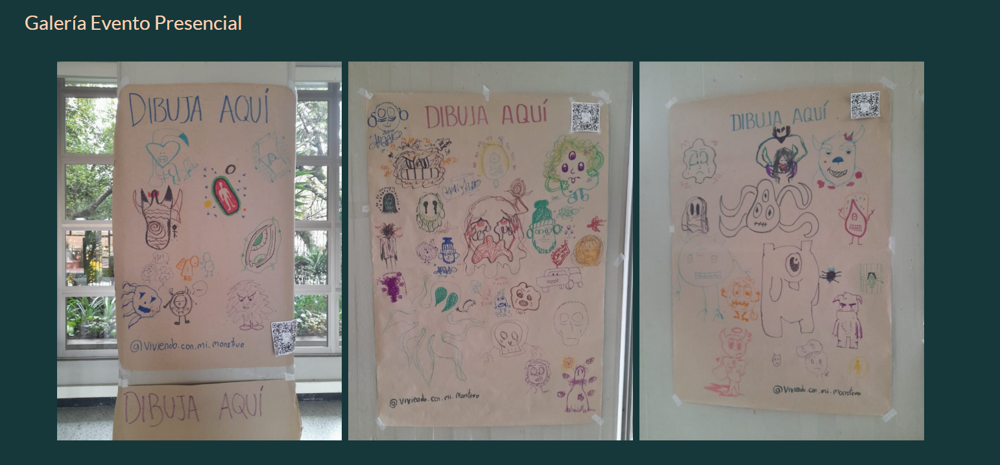
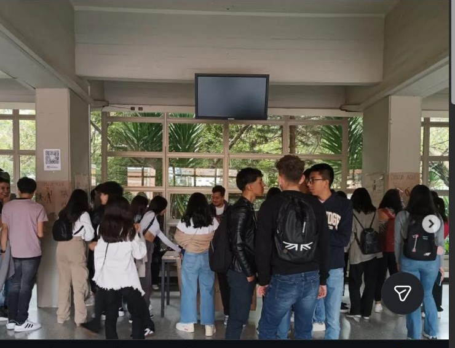
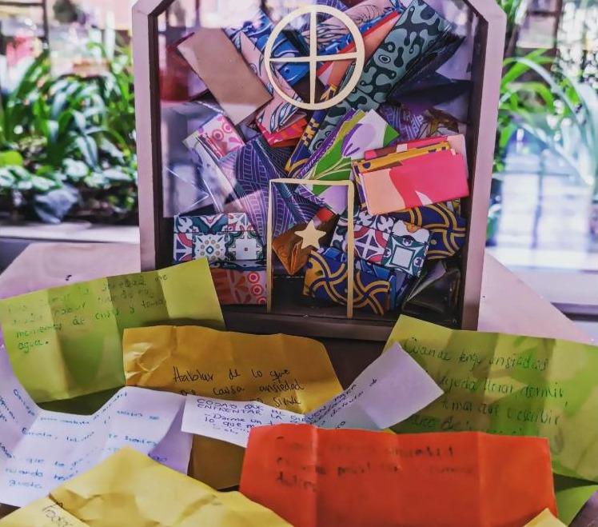
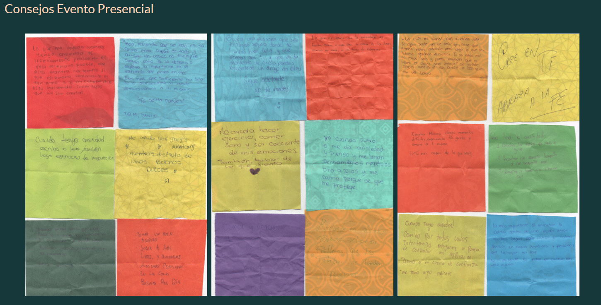

Ecosistema transmedia de 4 canales sobre ansiedad en estudiantes universitarios — video interactivo, visualización de datos, cómic y una activación física de 3 días en campus, con 98 consejos reales recolectados.
"Un día con Mi Monstruo" — video interactivo real en YouTube, canal propio del proyecto.
La ansiedad es invisible e incomprendida. ¿Cómo representar una emoción compleja de forma que estudiantes universitarios puedan identificarse y hablar de ella sin estigma — no solo informar sobre el tema, sino generar una experiencia real de reconocimiento?
La ansiedad se personifica como "Anxietas", un monstruo que convive con Valentina, la protagonista. La tesis del proyecto: la única forma de ordenar la casa es trabajar junto al monstruo, no combatirlo. Esa metáfora se sostiene en 4 canales distintos, no solo en el video.
No fue solo un proyecto digital. Del 2 al 4 de mayo de 2023, el proyecto tomó el piso 1 del módulo 1 de UTADEO con un stand, una pantalla y tableros físicos de "Dibuja Aquí" — precedido por una campaña de expectativa propia en Instagram (teaser → reveal → logística → evento).

Los monstruos de la ansiedad, dibujados a mano por los asistentes durante los 3 días de activación.


El stand real (izq.) y la caja donde se recolectaron los 98 consejos anónimos (der.).

Muestra de los 98 consejos reales recolectados — visualizados también en la sección de datos del sitio.
Estoy de acuerdo, me sentí muy identificada con Valentina, al vivir y dudar cosas cotidianas como lo hace una persona que vive con ansiedad, y aún así demostrar que puede luchar contra eso.
— Andrea, comentario real en el sitio, 9 mayo 2023El sitio sigue activo 3 años después. La cuenta de Instagram del proyecto (51 seguidores) tuvo picos de ~50 likes por publicación durante el evento — casi el 100% de la audiencia interactuando, no solo vanity metrics.
Rol: director, productor y editor del video interactivo, colorista de los personajes ilustrados, y coordinador/participante activo de la muestra en vivo. El proyecto funcionó como espejo colectivo — al darle forma visible a la ansiedad, los participantes pudieron nombrarla y compartirla.